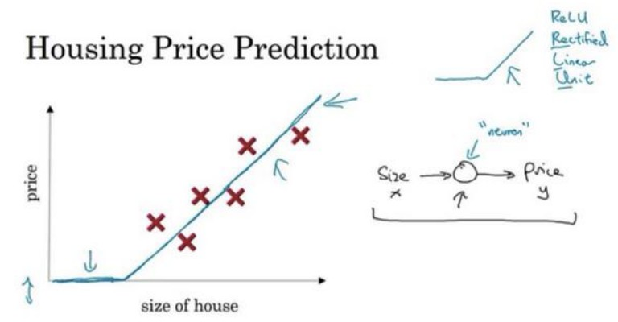
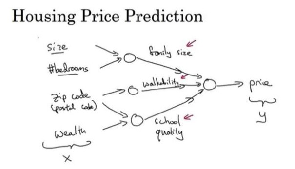
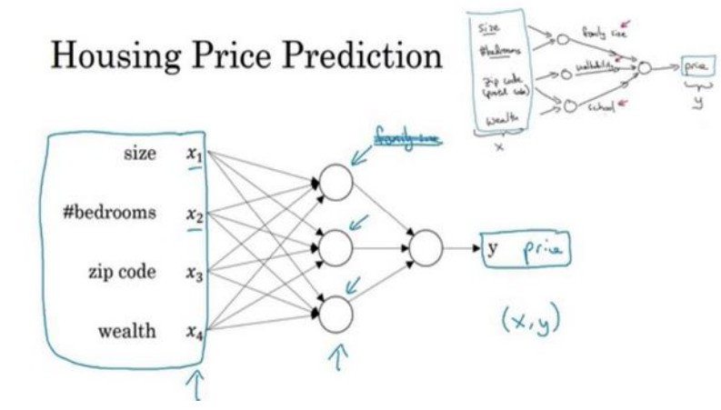
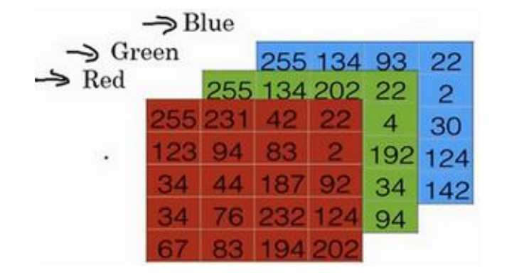
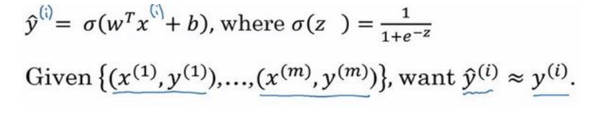
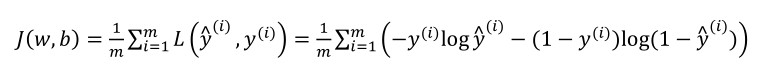
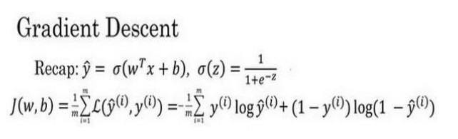
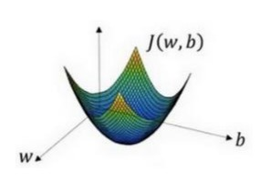
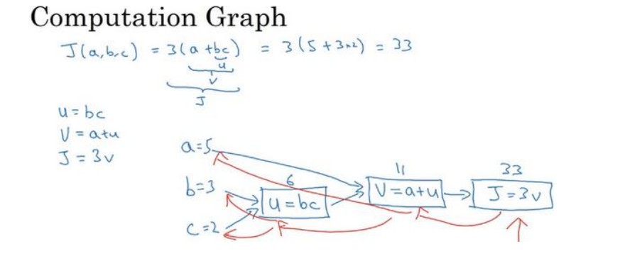
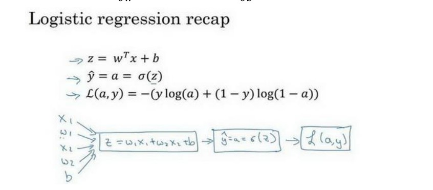

深度学习引言
欢迎
- 在第一门课程中,你讲学习如何建立神经网络(包含一个深度神经网络),以及如何在数据上面训练他们.在这门课程的结尾,你讲用一个深度神经网络进行辨认猫.
- 接下来在第二门课程中,将用三周时间进行深度学习方面的时间,学习严密地构件神经网络,如何真正让它表现良好,因此你需要学习超参数调整、正则化、诊断偏差和方差以及一些高级优化算法，比如Momentum和Adam算法。
- 第三门课程中，我们将用两周时间来学习如何结构化机器学习工程。适时证明，构建机器学习系统的策略改变了深度学习的错误。举个例子:你分割数据的方式,分割成训练集、比较集或改变的验证集，以及测试集合，改变了深度学习的错误
- 在第四门课程中，我们将会提到卷积神经网络(CNN(s)),它经常被用于图像处理领域.
- 最后在第五门课程中,你讲学到序列模型,以及如何将它们应用于自然语言处理,以及其他问题.序列模型包括的模型有循环神经网络(RNN)、全称是长短期记忆网络(LSTM)
因此,通过这些课程,你讲学习深度学习的这些工具,你将能够无去使用他们去做一些神奇的事情,并借此来提升你的职业生涯.
什么是神经网络?(What is Neural Network)
神经网络究竟是什么?
让我们从一个放假预测的例子开始讲起.假设你有一个数据集,它包含了流动房子的信息.所以,你知道房屋的面积是多少平方英尺或者平方米,并且知道房屋价格.这时,你想要拟合一个根据房屋面积预测房价的函数.
如果你对线性回归很熟悉,计划把这些数据拟合为一条直线,于是得到:

我们知道价格永远不会是附属,因此,为了代替一条可能会让价格为负的直线,我们把直线弯曲一点,让它在零结束.这条粗的蓝线最终就是你的函数,用于根据房屋面积预测价格.
我们把房屋的面积作为神经网络的输入(称之为x),通过一个结点(一个小圆圈),最终输出了价格(我们用y表示).其实这个小圆圈就是一个单独的神经元,接着你的网络实现了左边这个函数的功能.
从趋近于零开始,然后变成一条直线.这个函数被称为R额LU激活函数,他的全称是Rectified Linear Unit.rectify(修正)可以理解成max(0,x),这也是你得到一个这种形状的函数的原因.如果这是一个单神经网络,不管规模大小,它正是通过把这些单个神经元叠加在一起来形成的.
然我们看一个例子,我们不仅仅用房屋的面积来预测它的价格,现在你有了一些有关房屋的其他特征,比如卧室的数量,或许有一个很重要的因素:一家人的数量也会影响到房屋的价格,这个房屋能住下一家人吗?二者确实是基于房屋大小,以及真正决定一栋房子是否能适合你们家庭人数的卧室数.在美国,邮政编码(zip code)能够反映步行化程度和富裕程度.

在图上的每一个小圆圈都可以是ReLU的一部分,也就是指修正线性单元,或者其他稍微非线性的函数.基于房屋面积和卧室数量,可以估算家庭人口.基于邮编,可以估测步行化程度或者学校的质量.这些都将决定人们愿意花多少钱在房子上.对于一个房子来说,这些都是与他息息相关的,家庭人口,步行化程度以及学校的质量都能够帮助你预测房屋的价格.
以此为例,x是所有的这四个输入,y是你尝试预测的价格,把这些单个的神经元叠加在一起,我们就有了一个稍大的神经网络.

神经网络的一部分神奇之处在与,当你实现它之后,你要做的只是输入x就能得到输出y.因为它可以自己计算你训练集中样本的数目以及所有的中间过程.
神经网络的监督学习(Supervised Learning with Neural Networks)
几乎所有由神经网络创造的经济价值,本质上都离不开一种叫做监督学习的机器学习类别
word:{卷积(Convolutional Neural Network CNN)
递归神经网络(Recurrent Neural Network RNN)
}
神经网络的编程基础(Basics of Neural Network programming)
二分类(Binary Classification)
学会如何处理训练集
在神经网络的计算中,通常现有一个叫抢钱暂停(forward pause)或者叫向前传播(forward propagation)的步骤,接着有一个叫做反向暂停(backward pause)或者叫做反向传播(backward paopagation)的步骤.
在课程中将会使用二分类的算法,例如识别一只猫,输出标签1则为是猫,说出标签0则不是猫.
为了保存一张图片,需要保存三个矩阵,分别对应图片中红绿蓝三种颜色通道,如果图片大小为64x64像素,那么就有三个64x64的矩阵.

将这些像素值提取出来,然后放入一个特征向量x.为了把这些像素值转换为特征向量x,我们把所有的像素都取出来,得到一个吧图片中所有红绿蓝像素值都列出来的特征向量.如果图片的大小是64x64像素,那么x的总维度就是64*64*3=12288.现在用n_x=12288表示输出特征向量的维度.
符号定义:
- x:表示一个n_x维数据,为输入数据,维度为(n_x,1)
- y:表示输出结果,取值为(0,1);
- $(x^{(i)},y^{(i)})$:表示第i组数据,可能是训练数据,也可能是测试数据,此处默认为训练数据;
- X = [$x^{(1)},x^{(2)},…,x^{(m)}$]:表示所有的训练数据集的输入值,放在一个n_x * m的矩阵中,其中m表示样本数目;
- Y = [$y^{(1)},y^{(2)},…,y^{(m)}$]:对应表示所有训练数据集的输出值,维度为1*m
用一对(x,y)来表示一个单独的样本,x表示n_x维的特征向量,y表示标签(输出结果)只能为0or1.而训练集将有m个训练样本组成,其中$(x^{(1)},y^{(1)})$表示第一个样本的输入输出,以此类推,然后所有的这些仪器表示整个训练集.又是偶户为了强调这是训练样本的个数,会写作$M_{train}$,当涉及到测试集的时候,我们会之用$M_{test}$来表示测试机的样本数.
为了能把数据集表示的更紧凑一点,我们会定义一个矩阵用大写的X表示,他由输入向量$x^{(1)};x^{(2)}$等组成,把$x^{(1)}$作为第一列,$x^{(2)}$作为第二列…就得到了训练集矩阵X,所以这个矩阵由m列,m是训练集的样本数量,然后这个矩阵的高度即为$n_x$.
简单温习一下:X是一个规模为$n_x$乘以m的矩阵,当用python来实现时,会用到X.shape(),这是一条Python命令,用于显示矩阵的规模,即X.shape等于$(n_x,m)$.
那么怎么输出标签y呢?用Y=[$y^{(1)},y^{(2)},…,y^{(m)}$]来表示,是一个1乘以m的矩阵,同样适用Y.shape==(1,m)
逻辑回归(Logistic Regression)
本节将会主要极少逻辑回归的Hypothesis Function(假设函数)
为了时变图片,你想要一个算法能够输出预测,现只能称之为估计值$\hat y$,也就是对实际值y的估计.更正式的说,你想让$\hat y$表示y等于1的一种坑性或是机会,前提条件是给定了输入特征X,换句话说,如果X是那张似乎是猫的图片,你想让$\hat y$来表示这是一只猫的图片的纪律是多大. X是一个$n_x$维向量(相当于有$n_x$个特征的特征向量).我们用w来表示逻辑回归的参数,这也是一个$n_x$维向量(因为w实际上是特征权重,维度和特征向量相同),参数里面还有b,这是一个实数(表示偏差).所以给出输入x以及参数w和b之后,就可以得出 $\hat y$ = $w^Tx+b$ ($w^T$表示w的转置)
这时候我们得到的是一个关于输入x的线性函数,但却不是一个好的算法,因为如果想要$\hat y$表示实际值y等于1的几率的话,$\hat y$应该在0到1之间.但$x^T+b$可能要比1大或者为负值,对于想要的在0和1之间的概率来说是没有意义的.因此,在逻辑回归中,我们的输出上面的线性函数作为自变量的sigmoid函数.
关于sigmoid的公式:$\sigma(z) = (1 + e^{-z})^{-1}$
逻辑回归的代价函数(Logistic Regression Cost Function)
为什么需要代价函数:
为了训练逻辑回归模型的参数w和参数b,我们需要一个代价函数,通过训练的方式得到w,b.
逻辑回归的输出函数:

为了让模型通过学习调整参数,你需要给予一个m样本的训练集,这回让你在训练集上找到参数w和参数b.
对于训练集的预测值,我们将其写成$\hat y$,这个值自然是与y越接近越好
损失函数:
损失函数又叫误差函数,用来衡量算法的运行情况,Loss function:$L(\hat y,y)$,损失函数L用来衡量预测输出值和实际值有多接近,一般取预测值和实际值的平方差或者他们平方差的一般,但在逻辑回归中我们不这么做,因为当我们在学习逻辑回归参数的时候,会发现我们的优目标不是凸优化,只能找到多个局部最优值,梯度下降法很可能找不到全局最优值,虽然平方差是一个不错的损失函数,但是我们在逻辑回归函数中会用:$L(\hat y ,y) = -ylog(\hat y)-(1-y)log(1-\hat y)$作为损失函数.
为什么呢?因为这个函数能使逻辑回归损失函数的误差尽可能的小.例如:
- 当y=1时损失函数$L=-log(\hat y)$,如果想要损失函数L尽可能的小,纳闷$\hat y$就要尽可能的大,因为sigmoid函数取值为[0,1],所以$\hat y$会无限接近于1.
- 当y=0时损失函数$L = -log(1-\hat y)$,如果想要损失函数L尽可能的小,那么$\hat y$就要尽可能的小,一位sigmoid函数取值[0,1],所以$\hat y$会无限接近与0.
在这门课中有很多的函数效果和现在这个类似,就是如果y等于1,我们就尽可能让$\hat y$变大,如果y等于0,我们就尽可能让$\hat y$变小.除了衡量单个训练样本的损失函数,还有算法的代价函数,算法的代价函数是对m个样本的损失函数求和然后除以m:

梯度下降法(Gradient Descent)
梯度下降法可以做什么?
在测试集上,通过最小化代价函数(成本函数)J(w,b)来训练的参数w和b

如图,在第二行给出了和之前一样的逻辑回归算法的代价函数(成本函数)
梯度下降法的形象化说明:

在这个图中,横轴表示你的空间参数w和b,在实践中,w可以是更高的维度,但是为了绘图,我们定义w和b都是单一实数,代价函数J(w,b)是在水平轴w和b上的曲面,因此曲面的高度就是J(w,b)在某一点的函数值.我们所做的就是找到使得代价函数J(w,b)函数值的最小值,取其对应的参数w和b.
假定代价函数(成本函数)J(w)只有一个参数w,即用一位曲线代替多维曲线,
:= 表示更新参数
a 表示学习率(learning rate),用来控制步长(step),即向下走一步的长度$\frac {dJ(w)}{dw}$就是函数J(w)对w的求导(derivative)
逻辑回归的代价函数(成本函数)J(w,b)是含有两个参数的:
$\partial$ 表示求偏导符号,可以读作round
计算图(Computation Graph)
可以说,一个神经网络的计算,都是按照前向或后向传播过程组织的.首先我们计算出一个新的网络的输出(前向过程),紧接着进行一个反向传输操作.后者我们用来计算出对应的梯度或导数.计算图解释了为什么我们用这种方式组织这些计算过程.
我们尝试计算函数J,J是由三个变量a,b,c组成的函数,这个函数是3(a+bc).计算这个函数实际上有三个不同的步骤,首席那是计算b*c,我们把它储存到变量u中,因此u=bc;然后计算v=a+u;最后输出J = 3v,这就是计算的函数J.而这三步可以画作下图

由本例可以看出,通过一个从左向右的过程,你可以计算出J的值.为了计算导数,从左到右(红色箭头,和蓝色箭头的过程相反)的过程是用于计算导数最自然的方式.
逻辑回归中的梯度下降(Logistic Regression Gradient Descent)
假设样本只有两个特征$x_1$和$x_2$,为了计算z,我们需要输入参数$w_1$,$w_2$和b,除此之外还有特征值$x_1$和$x_2$.因此z的计算公式为:$z=w_1x_1 + w_2x_2 + b$
回想一下:
- 逻辑回归的公式定义如下:$\hat y = a = \sigma (z)$其中$z = w^Tx+b$,$\sigma (z) = \frac 1{1+e_{-z}}$
- 损失函数:$L({\hat y}^{(i)},y^{(i)} = -y^{(i)}log{\hat y}^{(i)}) - (1-{\hat y}^{(i)})log(1-{\hat y}^{(i)})$
- 代价函数:$J(w,b) = \frac 1m\sum^m_iL({\hat y}^{(i)},y^{(i)})$
假设现在只考虑单个样本的情况,单个样本的代价函数定义如下:
L(a,y) = -(ylog(a)+(1-y)log(1-a))
其中a是逻辑回归的输出,y是样本的标签值.w和b的修正值可以表达如下:
$w:= w-a\frac{\partial J(w,b)}{\partial w}$,$b:= b-a\frac{\partial J(w,b)}{\partial b}$

为了使得逻辑回归中最小化代价函数L(a,y),我们需要做的仅仅是修改参数w和b的值.因为我们想要计算出的代价函数L(a,y)的导数,首先我们需要反向计算出代价函数L(a,y)关于a的导数,在编写代码时可以使用da来表示$\frac {dL(a,y)}{da}$
现在进行最后一步反向推导,也就是计算w和b变化对代价函数L的影响:
1
因此,关于单个样本的梯度下降算法,所需要做的如下:
- 使用公式$dz = (a-y)$计算dz
- 使用$dw_1 = x_1dz$计算$dw_1$,$dw_2 = x_2dz$计算$dw_2$,$db=dz$计算db
- 更新$w_1 = w_1 - adw_1$,更新$w_2 = w_2 - adw_2$,更新$b = b-adb$
m个样本的梯度下降(Gradient Descent on m Examples)
首先时刻记住关于损失函数J(w,b)的定义:$J(w,b) = \frac 1m\sum^m_{i=1}L(a^{(i)},y^{(i)})$
上一节是对于任意单个训练样本,而全局代价函数其实就是1到m项各个损失的平均,它表明全局代价函数对$w_1$的微分,对$w_1$的微分也同样是各项损失对$w_1$微分的平均
所以这里有很多细节,但让我们被这些装进一个具体的算法,同时需要一起应用的就是逻辑回归和梯度下降.
我们初始化J = 0,$dw_1 = 0$,$dw_2 = 0$,db = 0;
代码流程(伪代码):1
2
3
4
5
6
7
8
9
10
11
12
13
14
15J = 0;dw1 = 0;dw2 = 0;db = 0;
for i = i to m
z(i) = wx(i)+b;
a(i) = sigmoid(z(i));
J += -[y(i)log(a(i))+(1-y(i))log(1-a(i))];
dz(i) = a(i)-y(i);
dw1 += x1(i)dz(i); //当特征数较多时,需要使用循环
dw2 += x2(i)dz(i);;
db += dz(i);
J /= m;
dw1 /= m;
dw2 /= m;
db /= m;
w = w-alpha*dw;
b = b-alpha*db;
这种算法看上去很简单,但是也有两个缺点:
- 需要编写两个for循环,第一个for循环是一个小循环遍历m个训练样本,第二个for循环是一个遍历所有特征的for循环,本例中只有2个特征,在特征变多时,确实需要.
- 在深度学习的算法中,代码中显式地使用for循环会使算法很低效,同时在深度学习领域会有越来越大的数据集.所以能够应用你的算法且没有显式地for循环很重要,这回帮助你使用更大的数据集.有一些向量化的技术能够帮你摆脱显式for循环
向量化(Vextorization)
向量化是非常基础的去除代码中for训话的艺术.
在逻辑回归中你需要去计算$z = w^Tx+b$w,x都是列向量,,如果有很多的特征那么就会有一个非常大的向量,所以w